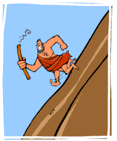

Prometheus, a figure from Greek mythology.
Prometheus -- his Greek name means forethought in one strand of the myth, created human beings from clay, animating them with fire stolen from Zeus. In another strand he stole fire in order to free humanity from dependence upon the gods and was punished by Zeus by being chained to a peak in the Caucasus mountains; there as an emblem of human frustration an eagle daily tore at his liver, which was restored by night.
The full title of Mary Shelley's novel is Frankenstein; or the Modern Prometheus. So it shouldn't come as a surprise that Mary Shelley was influenced by this tale. The Modern Prometheus' is the subtitle to the story and is very revealing. It gives a very strong hint as to how we are really meant to take the character of Frankenstein. Aside from the title, Shelley borrows from the tale of Prometheus a sense of consequence resulting from seeking enlightenment and power. Victor is her modern incarnation of Prometheus. He as Prometheus was, is fascinated by the power of electricity. We can recall from the narrative the moment when he becomes captivated by its fantastical power.
It is from this power, that he has equipped himself with that the inner torture he will suffer from the use of it stems. Immediately following the creation if the creature, Victor is ill with disgust for what he has done. His torture mirrors that of Prometheus'; undying and eternal. From the beginning of the novel, when Victor warns Walton of the consequences of his quest, to the conclusion when Victor again reiterates the misfortunes he has suffered as a result of his curiosity, Mary Shelley mimics the Prometheus tale. Perhaps, this is why she saw it as a fitting subtitle.
Also, just like Prometheus, Frankenstein and mankind were punished for these actions. Prometheus caused Zeus to create Pandora who released all evil, disaster and illness to mankind, while Frankenstein would live with the guilt and regret of having made this “monster” and releasing it onto society and also for the death of many of his friends and family.
The endings were also different. Frankenstein died, also with his creation. Prometheus and his both lived, albeit after much anguish. Well Frankenstein is Victor, not the monster so the: title of Prometheus can infer that he created or made life like Prometheus did. Both Frankenstein and Prometheus are like in many aspects; firstly both of them rebelled against the highest authority figures of their societies; Prometheus’s being Zeus and Frankenstein’s being God. Secondly, both were creators of “a new species”, Prometheus made mankind out of clay, while Victor Frankenstein” animated…lifeless matter” using technologies of galvanism.
The writer succeeds in making the audience sympathize with him. In the beginning you think: what a monster, kill him! But after a while the monster begins to learn what’s love and happiness is. Then you realizes that the monster is very ugly but that it doesn’t mean he has no feelings. You began to realize what Victor has done and that Victor is the one to be angry on. He made the monster, it wasn’t the monster’s first idea to hate everyone. If he just talked with the creature then the creature would have been have killed William and Henry. Mary Shelley let the monster tell his feelings and so you begin to realize how it is to be alone. The creature lives in the mountains or in the woods where it’s cold in winter. With that as background it’s easier to imagine how lonely the creature feels.
Modern science fiction is stuffed full of advanced cultures, extraterrestrial technology, planets that lie thousands of light years away and, yes, aliens. From Star Wars to the Fifth Element to Dune, and even the American Icon Superman, science fiction bombards readers with enough otherness to make it almost (ironically) common place. The final element of science fiction is catastrophe. In terms of Frankenstein, there is no need to belabor the point of how Victor destroyed his life and family in order to make himself a god. Movie or book, there has yet to be a “happy ending” to this story, and rightfully so. Victor dared to take from God what is His domain – to grant and take life. As the subtitle of the book says, he was as Prometheus giving fire to humans who had no idea how to receive or understand the gift. This hubris, as required by the tragic structure laid out by Aristotle, is followed by nemesis, divine retribution – the end of everything. The idea of catastrophe is that of caution – in essence: push the boundaries, but know your place
Just as common in science fiction literature, catastrophe is a chance to start again. After everything falls apart, there is the chance to build again, to show courage, determination and strength. Sometimes the catastrophe is the central conflict of the story, for example, Armageddon or the other Hale-Bopp inspired movie, Sudden Impact. In these cases, though catastrophe was not total, it was sufficient to alter life on Earth. Even the Star Trek saga hints at the horrors of pre-warp civilization, but the saga itself records the growth of a “better” world.
From the past couple of examples, it is evident that we can gather another aspect of Romanticism exemplified in Frankenstein: capturing the sublime moment and experience.